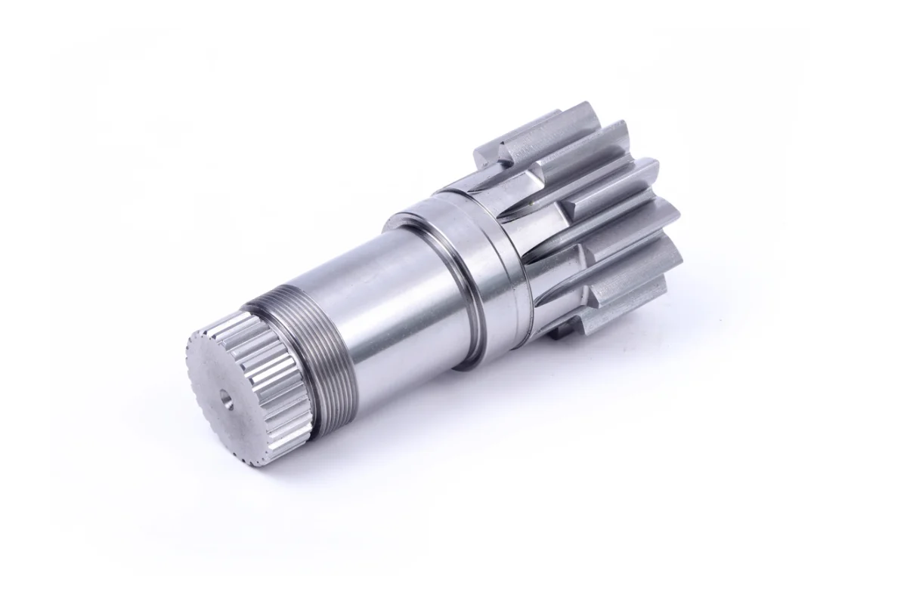

Precision Gear Demand in 2026: What's Driving the Market Forward
Introduction
The power transmission industry is entering a period of significant change. After
years of steady, predictable growth, multiple market forces are reshaping gear
specification, sourcing and manufacturing standards.
For companies that
depend on planetary gear reducers and precision gear components, understanding these
shifts isn't optional — it's how you stay competitive.

The Numbers Tell the Story
The global gear market reached USD 32.5 billion in 2025 and is projected to grow
to USD 47 billion by 2034, at a Compound Annual Growth Rate (CAGR) of 4.2% (Gear
Market Analysis, 2026). But those headline figures mask a more nuanced reality:
certain segments are accelerating far faster than the overall market.
Precision planetary reducers, for example, are growing at 7.5% annually
(Precision Planetary Reducers Market, 2026). The precision gearbox segment is
tracking at 9.35% CAGR (Precision Gearbox Market, 2026). The new energy vehicle
electric drive system gear market is projected to expand from USD 2.1 billion in
2025 to USD 12.6 billion by 2034 — a 21.8% CAGR that outpaces all other gear
subsectors (NEV Electric Drive System Gear Market, 2026).
These are not minor incremental shifts; they signal fundamental changes to
demand sources and buyer technical requirements.
Three Forces Reshaping Precision Gear Demand
1. Renewable Energy Infrastructure Build-Out
Wind energy has become one of the largest drivers of heavy-duty precision
gear demand. Offshore turbines rated at 10 megawatts and above require
nacelle gearboxes with gear sets machined to tighter tolerances and longer
design service lives than their onshore counterparts (Gear Market Analysis,
2026).
The key implication for gear manufacturers: large-module helical and
planetary gears capable of continuous multi-megawatt torque handling are no
longer niche products — they are core requirements for a fast-expanding
market segment.
2. Industrial Automation and Robotics
Industrial automation remains the backbone of precision gear consumption,
yet the mix of target applications is shifting rapidly. Semiconductor
fabrication, electronics assembly, and robotics stand among the
fastest-growing end users, fueled by demand for ultra-quiet, low-backlash,
compact gearing solutions.
The global push toward Industry 4.0 and predictive maintenance is also
rewriting product specifications. Buyers increasingly seek gear sets fitted
with integrated condition monitoring hardware — embedded sensors that enable
real-time tracking of gear tooth load and operating temperature. This shifts
maintenance workflows from fixed scheduled intervals to condition-based
schedules, reducing unplanned equipment downtime.
3. Electric Vehicle Powertrains
Widespread electrification of passenger and commercial vehicles generates
massive new demand for high-precision reducer gears. Electric motors operate
at far higher RPM than internal combustion engines, requiring gears that
deliver consistent torque amplification while minimizing energy loss.
Between 2022 and 2025, global new energy vehicle registrations grew at an
average rate of 34%, exceeding 15 million units per year (NEV Electric Drive
System Gear Market, 2026). Every vehicle integrates multiple precision gear
sets within its electric drive system, and the supporting precision gear
market expands rapidly alongside this growth.
Regional Dynamics: Where the Growth Is
Asia-Pacific continues to dominate the global gear market, accounting for
approximately 43% of total demand in 2025 (Gear Market Analysis, 2026). The
region's sustained manufacturing expansion — concentrated in China, India, and
Southeast Asia — maintains steady gear consumption across steel, cement, mining,
and general machinery sectors.
North America emerges as the fastest-growing regional market, with a projected
CAGR of 5.2% through 2034 (ibid.). Wind energy rollouts, national defense
modernization, and industrial automation upgrades collectively drive robust
local demand. Manufacturing reshoring also pushes equipment OEMs to source
domestically manufactured high-precision gear sets.
Europe retains its position as a mature yet stable market, focused on upgrading
legacy industrial infrastructure and preserving its global leadership in
precision mechanical engineering.
What This Means for Buyers
If you source planetary gear reducers or custom gear components for your
equipment lines, these market trends deliver clear, actionable takeaways:
Lead times are tightening. As demand surges across all high-growth verticals,
manufacturers with constrained production capacity are pushing out their order
lead times. Buyers who delay sourcing until urgent equipment needs arise will
face extended waiting windows.
Specifications are growing more stringent. Rising demand for embedded monitoring
sensors, higher precision grades, and fully custom configurations means
off-the-shelf gear solutions often fail to meet modern performance standards.
Early collaboration with suppliers capable of custom development is critical.
Supply chain diversification is accelerating. End users are qualifying
manufacturing partners in India, Eastern Europe, and Southeast Asia to mitigate
lead-time risks and reduce overreliance on single-region supply bases. This
transition unlocks new sourcing options for buyers open to evaluating
alternative manufacturing partners.
Looking Ahead
The precision gear market is not merely growing — it is rapidly evolving.
Overlapping expansion of renewable energy, industrial automation, and vehicle
electrification creates substantial opportunities for manufacturers able to
deliver high-precision, application-tailored solutions within competitive lead
times.
For equipment buyers, the core takeaway is clear: map your long-term market
trajectory, engage gear suppliers well in advance, and build flexible
partnerships that can scale alongside your evolving technical demands.
The gear manufacturers poised to thrive in this landscape will not only operate
advanced production equipment — they will translate deep technical expertise
into stable, long-term collaborative partnerships.
About GTIT
Ningbo Geartorque Intelligent Transmission (GTIT) develops and manufactures custom planetary reducers and precision gear components for global industrial clients. Our dual production bases deliver both ultra-precision compact gearing and heavy-load large-module gear solutions, supporting partners across automation, new energy, construction machinery and lifting equipment sectors.
#PrecisionGear #PlanetaryReducer #PowerTransmission #IndustrialAutomationGears #NEVDrivetrains #WindTurbineGearbox #GearIndustryAnalysis2026 #ManufacturingMarketReport